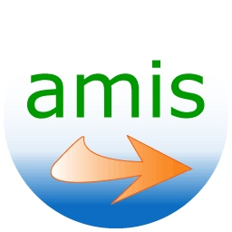
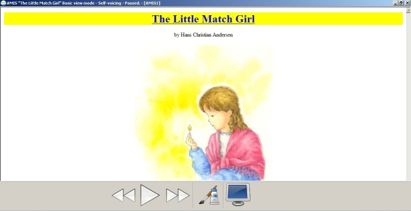
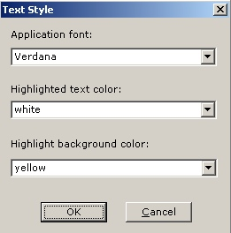

This document gives a brief introduction to AMIS, including its features, requirements, and options. For a list of all commands and shortcut keys, please read the Keyboard Shortcuts document, found under the Help menu.

AMIS stands for Adaptive
Multimedia
Information
System.
AMIS is a software program that you can use to read DAISY books. It is self-voicing, meaning that no specialized screen-reading software is needed in order for it to be used by visually impaired people. AMIS is open source software and is provided free of charge. It has been translated into dozens of languages. Go to http://amisproject.org to download language packs.
DAISY stands for Digital
Accessible
Information
SYstem.
DAISY books are fully accessible digital talking books. Common features of books, such as sections, pages, footnotes, sidebars, and bookmarks are represented in a way that allows users to quickly navigate using them.
In fact, the document you are reading now is a DAISY book! You can see and hear the synchronized text and audio, and move around by section or phrase.
The DAISY standard is a globally recognized technical standard, originally developed to benefit people who are unable to read print due to a disability. It also has broad applications for improved access to text in the mainstream.
The DAISY consortium was founded in 1996 and consists of a growing membership of organizations around the world committed to developing equitable access to information for people who have a print disability.
You can learn more about DAISY at http://daisy.org.
The following document formats are supported by AMIS:
The following PC configuration is required:
The AMIS installer will report if a required component is missing.
The screen has two view modes: default and basic. AMIS will start in default view mode unless you tell it to start in basic view (this setting is in the Preferences dialog).
The default view has four major pieces: a menu, a toolbar, a navigation window to the left, and a content window in the center of the screen.
The toolbar has eleven medium-sized buttons: open a book,
load a cd,
go to the previous phrase,
play/pause,
go to the next phrase,
slow down,
speed up,
smaller font,
bigger font,
change the page style, and
add a bookmark.

The toolbar
The navigation window contains one or more tabbed lists, depending on what the book contains. The first list is always a hierarchical list of sections. The second list contains page numbers (if the book has pages). The subsequent lists contain special items such as footnotes or figures (again, if the book contains these items), with each item type appearing in its own list.

The navigation window
The basic view has two major pieces: a toolbar along the bottom of the screen and a content window in the center of the screen. The toolbar has four large buttons: go to the previous phrase,
play/pause,
go to the next phrase,
switch back to default view mode. There is no menu or navigation window in basic view mode.

AMIS in basic view mode
The following sections contain brief descriptions of the features in AMIS, organized by topic.
DAISY books can be on your hard drive, on a CD-ROM or located remotely.
DAISY books are played automatically from beginning to end. You can control the following playback features:
In addition to linear playback, DAISY books offer other ways to move around.
Use the items in the navigation window to browse the structure of a book.
It is easy to get more information about the book you are reading by using the publication summary dialog of AMIS. Here is a full list what is available:

The publication summary dialog
The AMIS user interface lets you choose different display options for the screen layout and the DAISY book style.
The following settings are accessed via the Preferences dialog under the File menu.

The preferences dialog
The following settings are accessed via the Text Style dialog under the View menu.

The text style dialog
The homepage for AMIS is http://amisproject.org. All information about new releases, available language packs, submitting bug reports, and getting involved can be found there. We look forward to hearing from you.